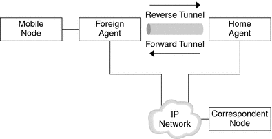
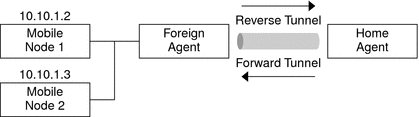
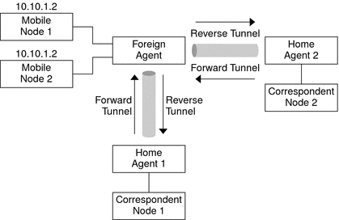

|
|||
|
1. Solaris TCPIP Protocol Suite (Overview) 2. Planning an IPv4 Addressing Scheme (Tasks 3. Planning an IPv6 Addressing Scheme (Overview) 4. Planning an IPv6 Network (Tasks) 5. Configuring TCP/IP Network Services and IPv4 Addressing (Tasks) 6. Administering Network Interfaces (Tasks) 7. Enabling IPv6 on a Network (Tasks) 8. Administering a TCP/IP Network (Tasks) 9. Troubleshooting Network Problems (Tasks) 10. TCP/IP and IPv4 in Depth (Reference) 12. About Solaris DHCP (Overview) 13. Planning for DHCP Service (Tasks) 14. Configuring the DHCP Service (Tasks) 15. Administering DHCP (Tasks) 16. Configuring and Administering DHCP Clients 17. Troubleshooting DHCP (Reference) 18. DHCP Commands and Files (Reference) 19. IP Security Architecture (Overview) 21. IP Security Architecture (Reference) 22. Internet Key Exchange (Overview) 24. Internet Key Exchange (Reference) 25. Solaris IP Filter (Overview) Routing Datagrams to and From Mobile Nodes Security Considerations for Mobile IP 28. Administering Mobile IP (Tasks) 29. Mobile IP Files and Commands (Reference) 30. Introducing IPMP (Overview) 31. Administering IPMP (Tasks) Part VI IP Quality of Service (IPQoS) 32. Introducing IPQoS (Overview) 33. Planning for an IPQoS-Enabled Network (Tasks) 34. Creating the IPQoS Configuration File (Tasks) 35. Starting and Maintaining IPQoS (Tasks) 36. Using Flow Accounting and Statistics Gathering (Tasks) |
Mobile IP With Reverse TunnelingThe section How Mobile IP Works assumes that the routing within the Internet is independent of the source address of the datagram. However, intermediate routers might check for a topologically correct source address. If an intermediate router does check, the mobile node needs to set up a reverse tunnel. By setting up a reverse tunnel from the care-of address to the home agent, you ensure a topologically correct source address for the IP data packet. Reverse tunnel support is advertised by foreign agents and home agents. A mobile node can request a reverse tunnel between the foreign agent and the home agent when the mobile node registers. A reverse tunnel is a tunnel that starts at the care-of address of the mobile node and terminates at the home agent. The following figure shows the Mobile IP topology that uses a reverse tunnel. Figure 27-4 Mobile IP With a Reverse TunnelLimited Private Addresses SupportMobile nodes that have private addresses that are not globally routeable through the Internet require reverse tunnels. Solaris Mobile IP supports mobile nodes that are privately addressed. See Overview of the Solaris Mobile IP Implementation for the functions that Solaris Mobile IP does not support. Enterprises employ private addresses when external connectivity is not required. Private addresses are not routeable through the Internet. When a mobile node has a private address, the mobile node can only communicate with a correspondent node by having its datagrams reverse-tunneled to its home agent. The home agent then delivers the datagram to the correspondent node in whatever manner the datagram is normally delivered when the mobile node is at home. The following figure shows a network topology with two mobile nodes that are privately addressed. The two mobile nodes use the same care-of address when they are registered to the same foreign agent. Figure 27-5 Privately Addressed Mobile Nodes Residing on the Same Foreign NetworkThe care-of address and the home agent address must be globally routeable addresses if these addresses belong to different domains that are connected by a public Internet. The same foreign network can include two mobile nodes that are privately addressed with the same IP address. However, each mobile node must have a different home agent. Also, each mobile node must be on different advertising subnets of a single foreign agent. The following figure shows a network topology that depicts this situation. Figure 27-6 Privately Addressed Mobile Nodes Residing on Different Foreign Networks |
||
|